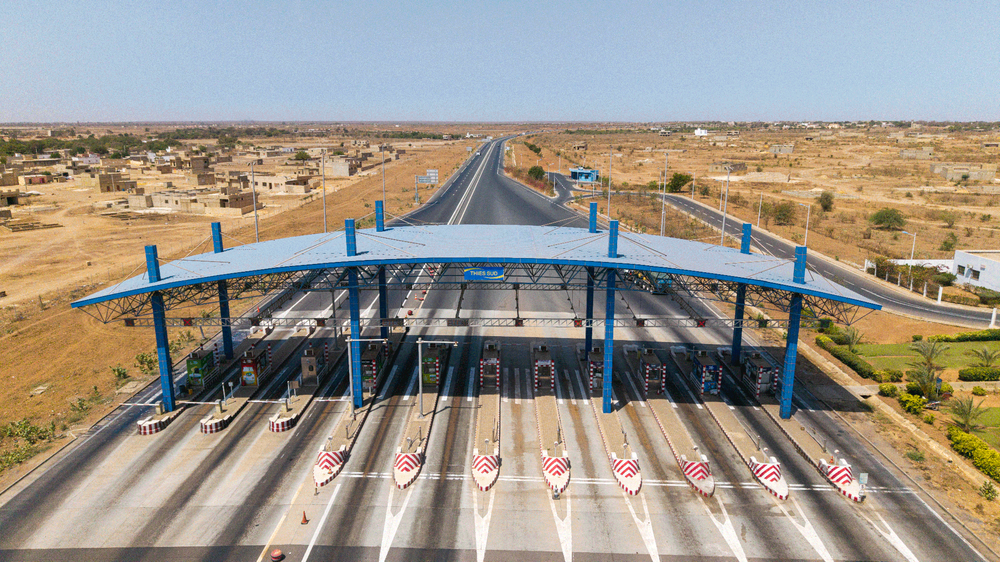

Autoroute à péage
AIBD → Thiès → Touba
129
km
Axe stratégique reliant l'aéroport AIBD à la ville sainte de Touba via Thiès. Vital pour le pèlerinage du Magal et l'économie nationale.
- Autoroute principale
- Patrouille 24/7
- Centre dédié